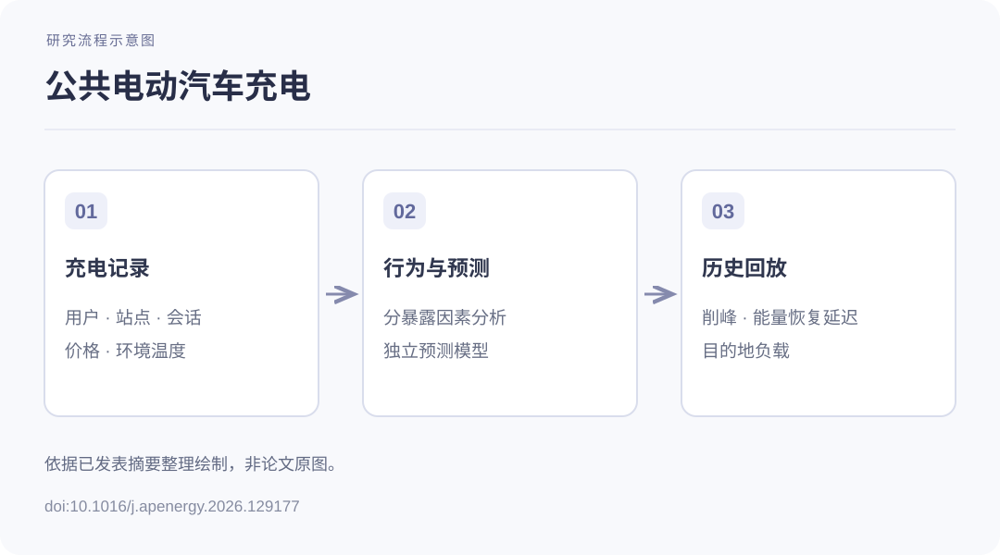

研究示意图Applied Energy
Public electric vehicle charging under price changes and ambient temperature: Behavioral heterogeneity and managed-charging trade-offs
427, Part F, 129177
2026 在线发表 · 2027年1月卷期
其他研究尝试
研究概览
研究概述
基于 441,077 次公共充电记录研究用户行为异质性，并通过 184 天历史回放评估有序充电决策。研究区分价格与温度证据及预测筛选，量化削峰、能量恢复延迟与目的地负载之间的权衡。